Phase 1
In the first three minutes, space filled with hydrogen and helium.
IllustrationCode-built animationSix Phases of Creation
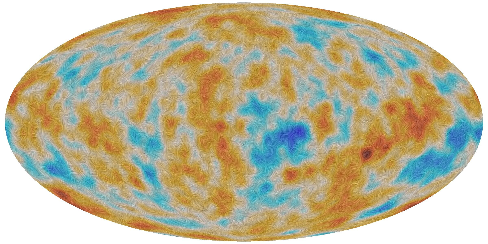
380,000 years later, the first light broke free. We still see it today.
DataPlanck map of the oldest lightESA/Planck Collaboration
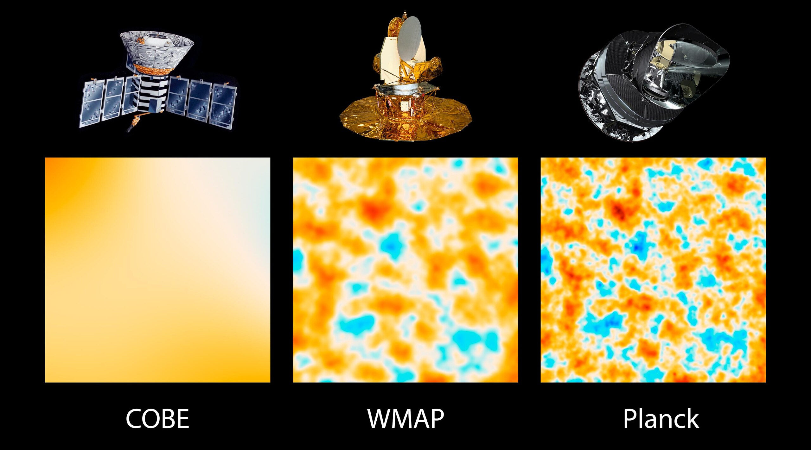
Each telescope saw that light more sharply.
DataCOBE, WMAP, Planck (spacecraft illustrated)NASA/JPL-Caltech/ESA
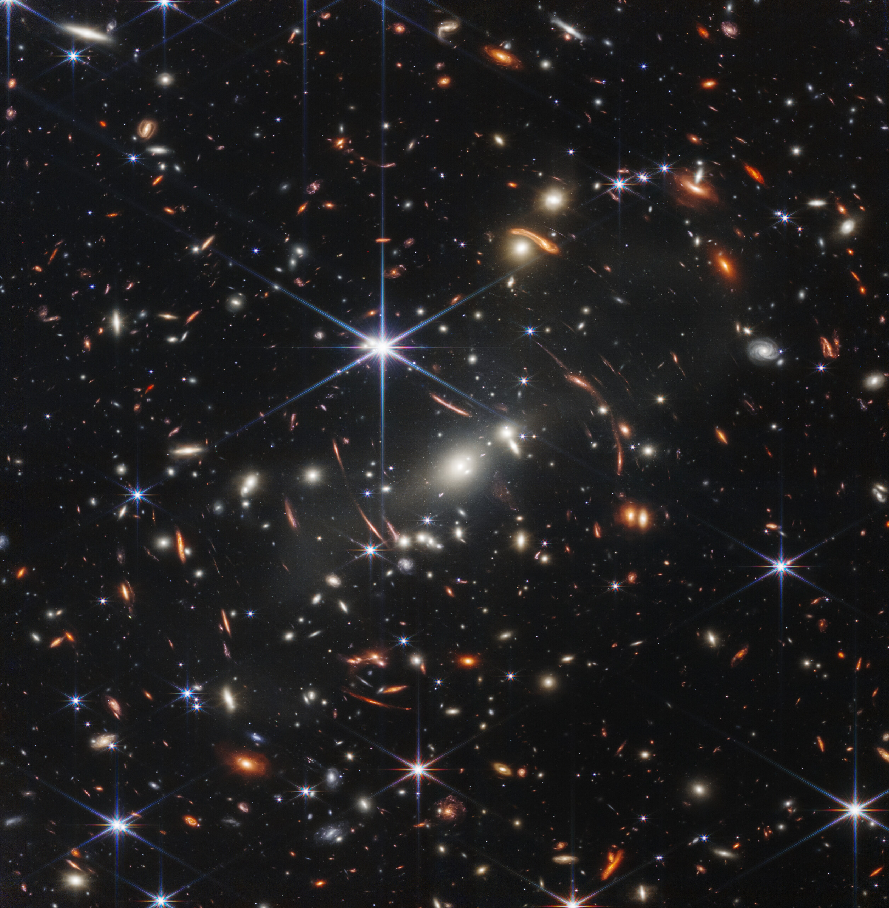
Phase 2
After 100 million years of darkness, the first stars lit up.
PhotoWebb's First Deep FieldNASA, ESA, CSA, STScI
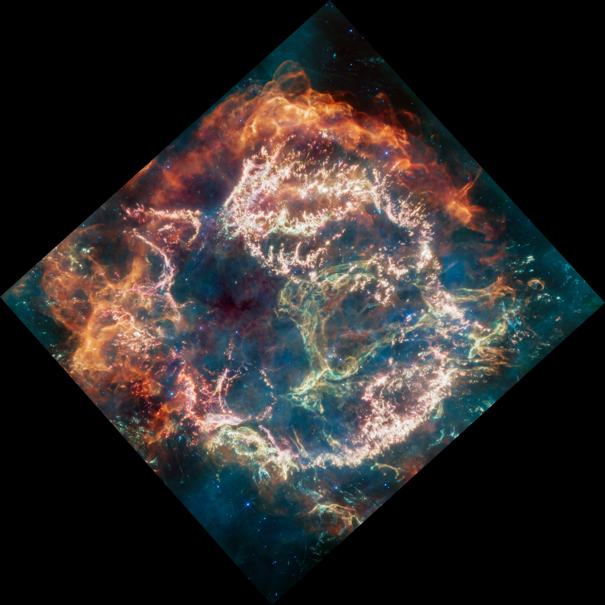
Giant stars lived a few million years, then exploded, forging carbon, oxygen and iron.
PhotoCassiopeia A, Webb 2023NASA, ESA, CSA, D. Milisavljevic (Purdue Univ.), T. Temim (Princeton Univ.), I. De Looze (UGent), J. DePasquale (STScI)
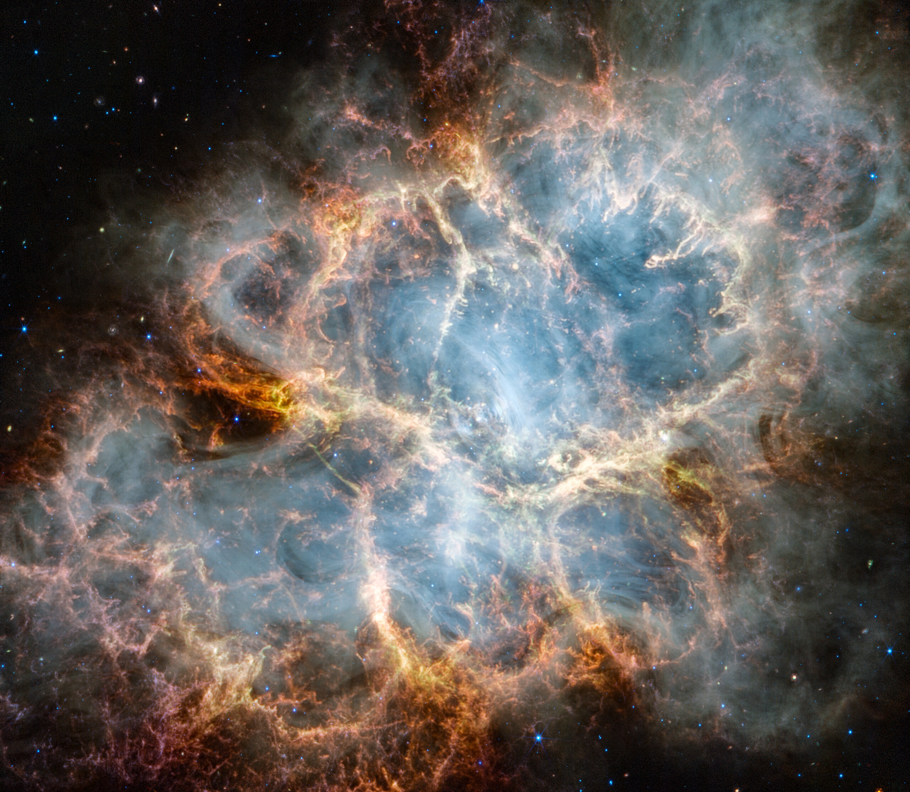
Every heavy atom on Earth was made in stars like these.
PhotoCrab Nebula, Webb 2023NASA, ESA, CSA, STScI, T. Temim (Princeton Univ.)
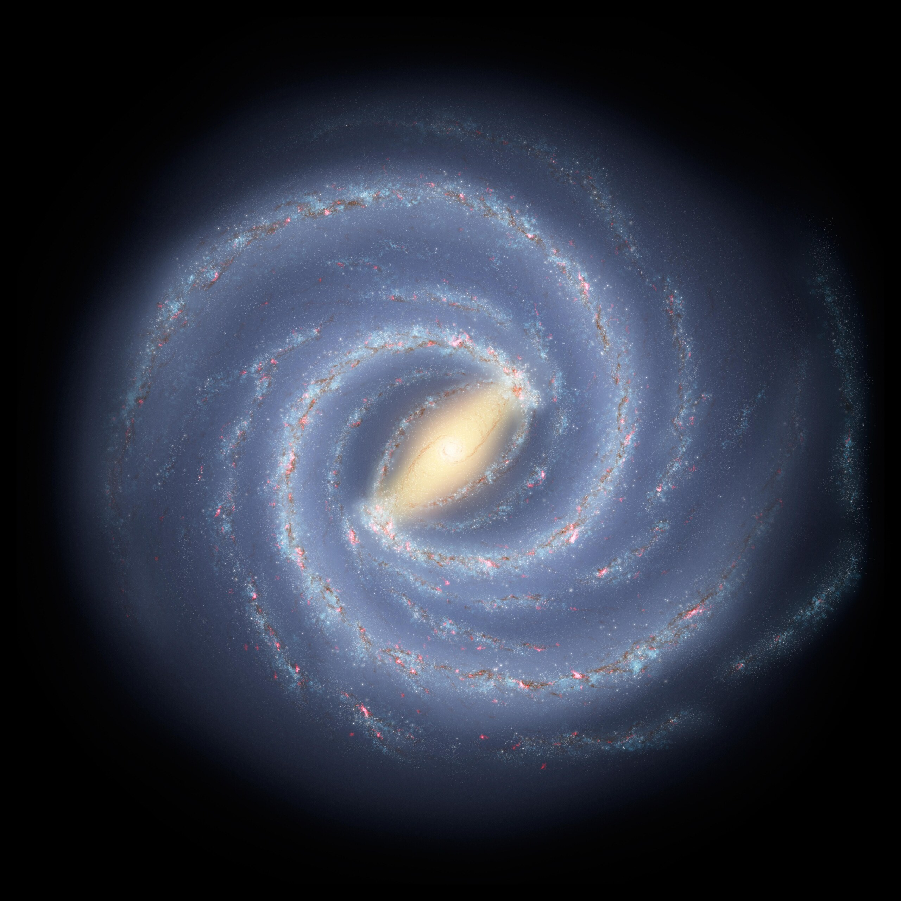
Phase 3
Spinning gas flattened into disks. Ours began within a billion years of the Big Bang.
IllustrationOur galaxy, the Milky WayNASA/JPL-Caltech
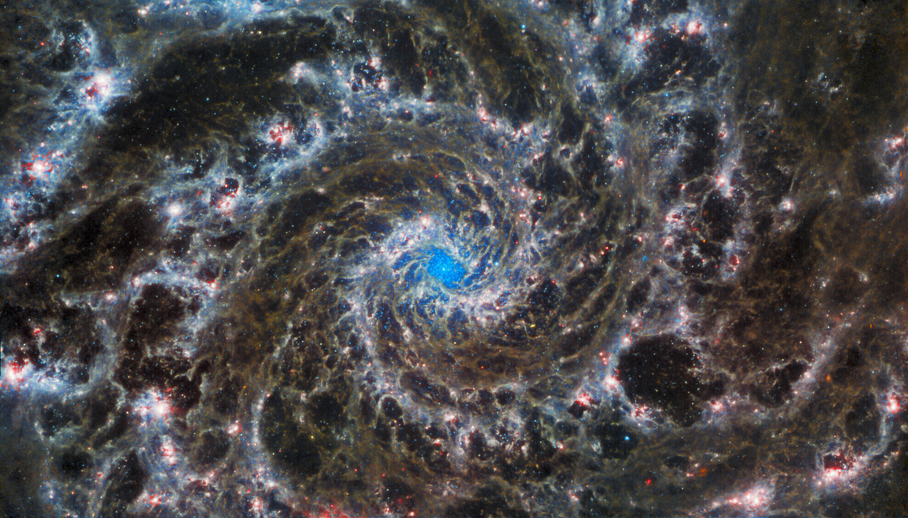
Our galaxy's disk now holds 100 to 400 billion stars.
PhotoPhantom Galaxy M74, WebbESA/Webb, NASA & CSA, J. Lee and the PHANGS-JWST Team
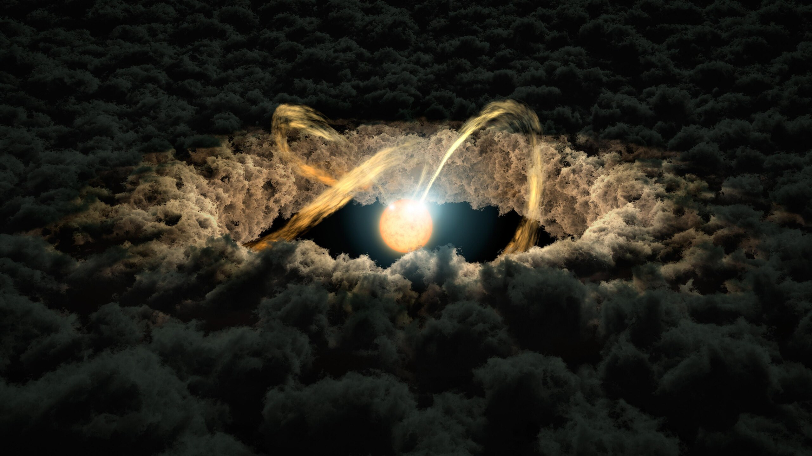
Phase 4
4.567 billion years ago, a cloud collapsed. The Sun lit up inside a disk of dust.
IllustrationA young star in its diskNASA/JPL-Caltech
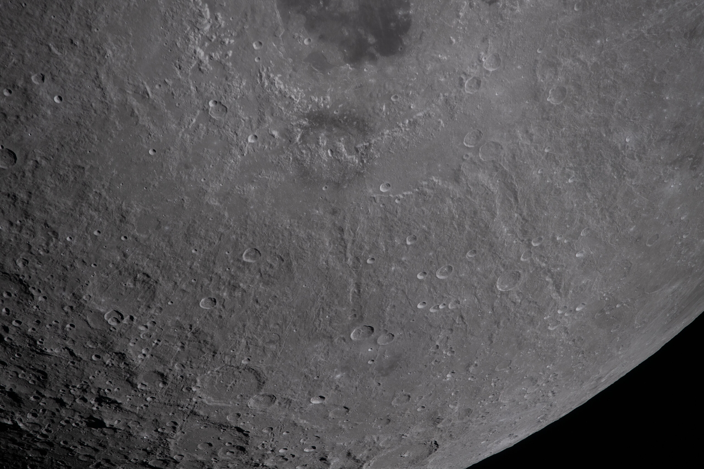
A Mars-sized world struck the young Earth. The debris became our Moon.
PhotoThe Moon, photographed by Artemis II (2026)NASA
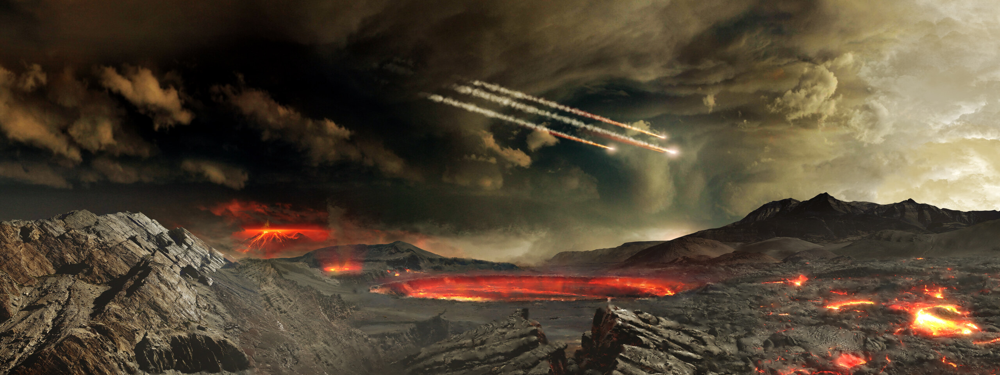
Phase 5
Young Earth: lava, steam and impacts. The air had no oxygen.
IllustrationThe young EarthNASA Goddard Conceptual Image Lab
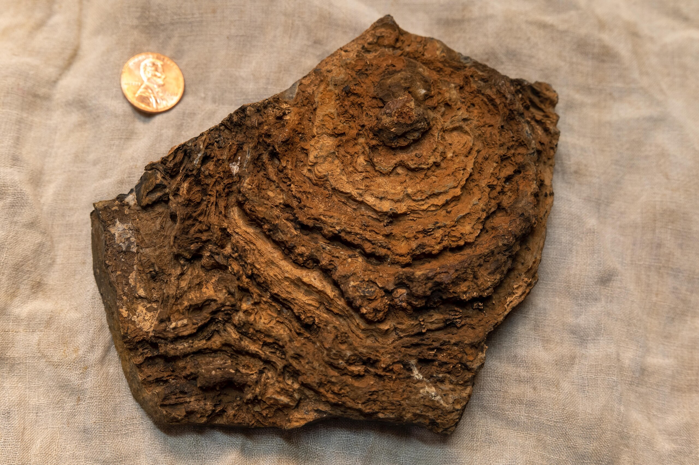
Microbes learned to use sunlight. About 2.4 billion years ago they filled the air with oxygen.
Photo2.7-billion-year-old stromatolite, Western AustraliaNASA/JPL-Caltech
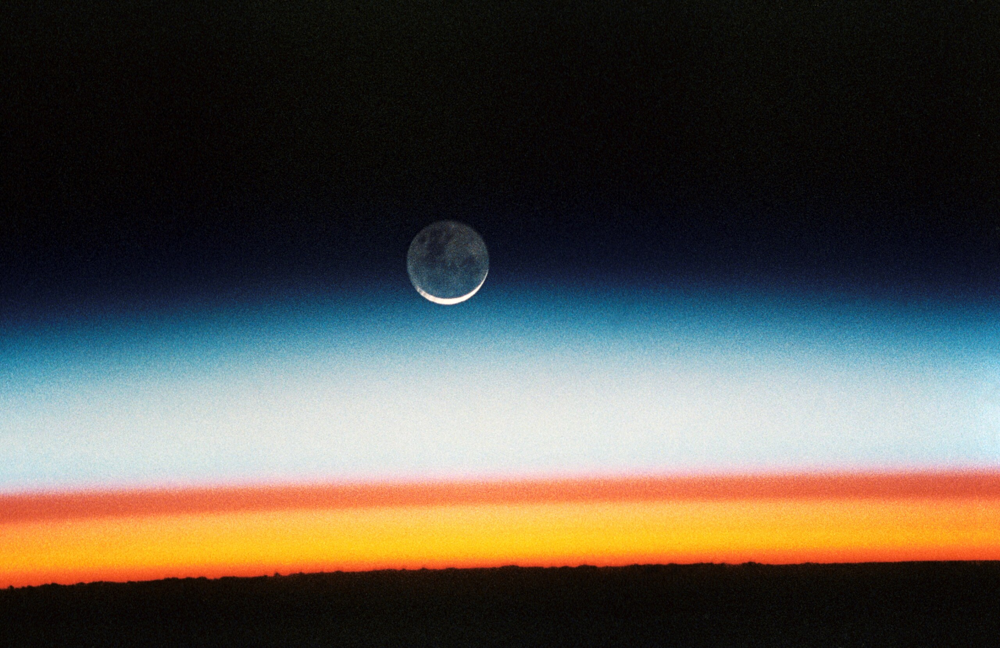
Oxygen built the ozone layer, and the sky gained its layers.
PhotoEarth's limb from the Space Shuttle, 1992NASA
Phase 6
Continents gathered and broke apart.
DataPlate model CAO2024, 1,800 to 100 million years agoCao et al. 2024 · EarthByte / GPlates
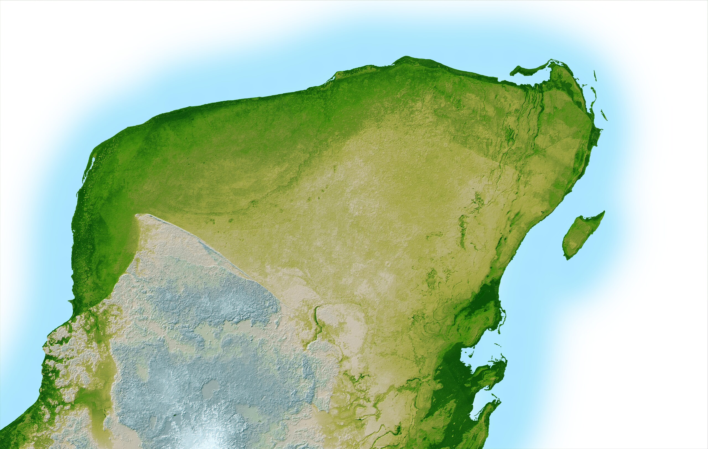
66 million years ago, an asteroid struck here. Its buried crater still shows in the land.
DataChicxulub crater, Yucatán (radar topography)NASA/JPL
300,000 years ago, the first people. This story ends where ours begins.
DataPlate model CAO2024, today's coastlinesCao et al. 2024 · EarthByte / GPlates
13.8 billion years in six phases
Images: NASA · ESA · CSA · STScI · ESA/Webb · ESA/Planck Collaboration · NASA/JPL-Caltech · NASA Goddard Conceptual Image Lab · PHANGS-JWST Team. Plate model: Cao et al. 2024, EarthByte / GPlates.
Illustrations and code-built sequences are labelled on screen. Not produced or endorsed by NASA or ESA.
Phase 1 · The Big Bang